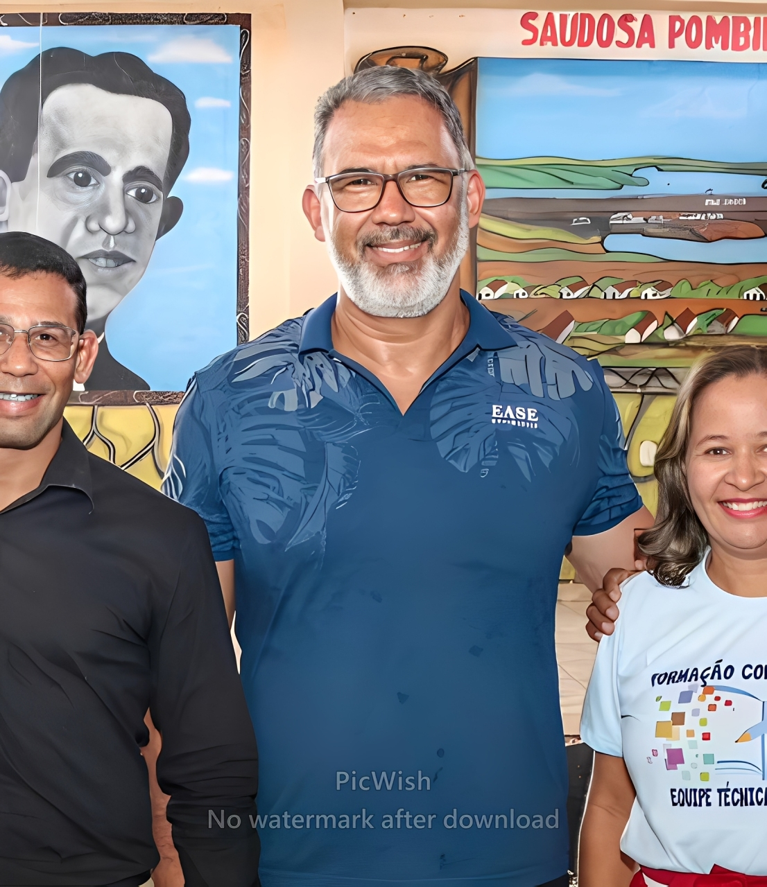
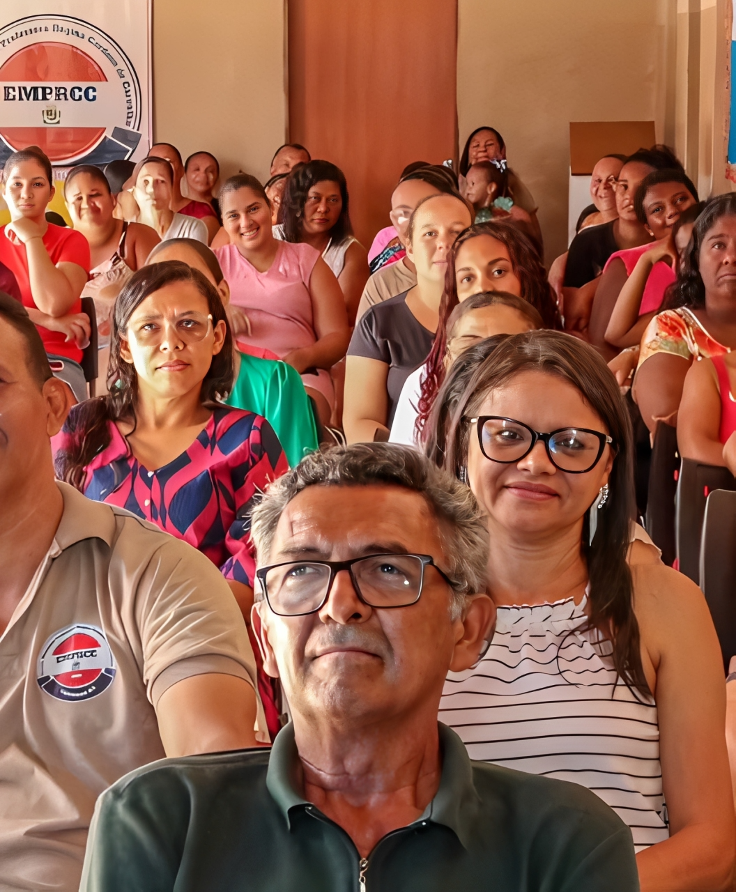

01
Conhecimento que se compartilha
Experiências e conteúdos apresentados de forma próxima, clara e humana.
Instituto de Desenvolvimento e Reabilitação Emocional
Formamos pessoas e fortalecemos instituições com conhecimento, prática e ferramentas para transformar relações.
Quem somos
O IDERE nasceu com o propósito de ampliar o acesso ao conhecimento e ao desenvolvimento emocional, oferecendo formação, capacitação e palestras.
Nossa proposta é levar esse conhecimento para além do consultório, alcançando empresas, escolas, famílias, comunidades e órgãos públicos.
Conheça nossa forma de trabalhar →O trabalho na prática
O desenvolvimento emocional acontece no encontro: em formações, palestras e conversas que aproximam conhecimento e vida real.

Experiências e conteúdos apresentados de forma próxima, clara e humana.

Grupos que aprendem juntos e constroem novas possibilidades.
Trocas que despertam reflexão e fortalecem relações.
Nossas soluções
Projetos com propósito, desenhados para despertar consciência e gerar mudanças que permanecem.
Conhecimento e ferramentas para quem deseja atuar na área do desenvolvimento e cuidado emocional, respeitando os limites legais de atuação.
Inteligência emocional adaptada à necessidade da sua instituição, com temas relevantes e aplicação prática.
Programas personalizados para equipes, lideranças, famílias e comunidades que desejam construir ambientes mais saudáveis.
Para futuros terapeutas
Inteligência emocional, PNL, TRG, autoconhecimento, relacionamentos, liderança e ferramentas de atendimento em uma jornada estruturada e prática.
Quero conhecer a formação ↗A formação não equivale à graduação em Psicologia nem habilita o aluno a se apresentar como psicólogo ou exercer atividades privativas de profissões regulamentadas.
Nossa metodologia
Transformar conteúdo em experiência prática é o que faz uma mudança sair do papel.
Compreender conceitos sobre emoções e comportamento.
Reconhecer padrões, gatilhos e dificuldades.
Aprender ferramentas aplicáveis ao cotidiano.
Transformar conhecimento em novas atitudes.
Continuar o desenvolvimento pessoal e profissional.
Para quem é o IDERE?
Cada público tem suas perguntas, seus desafios e seu ritmo. Por isso, cada experiência é pensada para fazer sentido.
Autoconhecimento e desenvolvimento emocional.
Pessoas, equipes e lideranças mais preparadas.
Educação emocional para toda a comunidade escolar.
Capacitação e projetos para municípios.
Relacionamentos mais saudáveis e conscientes.
Marcelo Santos
Fundador do Instituto IDERE
Sobre o fundador
Marcelo Santos é pastor, terapeuta e fundador do Instituto IDERE. Atua na área de desenvolvimento emocional, com formação e experiência em Terapia de Reprocessamento Generativo, Programação Neurolinguística e inteligência emocional.
À frente do IDERE, desenvolve projetos de formação, palestras e conteúdos para tornar o conhecimento emocional mais acessível.
Perguntas frequentes
Não encontrou a sua dúvida? Fale com nossa equipe pelo WhatsApp.
Falar com um consultor ↗Não. A formação não substitui uma graduação em Psicologia e não habilita o aluno a utilizar o título de psicólogo ou exercer atividades privativas de profissões regulamentadas.
Sim. O programa pode ser realizado online, conforme o calendário e formato da turma vigente.
Sim. As palestras podem ser personalizadas de acordo com o perfil da empresa, quantidade de participantes e objetivo do evento.
Sim. Desenvolvemos palestras e projetos para educadores, gestores, famílias, alunos e municípios.
Entre em contato pelo WhatsApp e informe sua instituição, cidade, público estimado e objetivo da palestra.
Vamos conversar
Sua empresa, escola ou prefeitura pode solicitar uma palestra, treinamento ou projeto personalizado.
Solicitar proposta pelo WhatsApp ↗ Conte-nos sobre sua instituição, público, cidade e objetivo do evento.